5 Demographic Variables
Chapter 4 examined cross-linguistic consistency and variability in children’s reported vocabulary. In this chapter, we follow up these analyses by beginning the process – which will span throughout the book – of attempting to understand the nature and sources of these differences. In particular, we take advantage of the sample diversity described in Chapter 3 to explore differences in the median trajectory of vocabulary growth within demographic groups, focusing on three variables that are relatively available in our data: sex, maternal education, and birth order. Our goal is to develop a framework for comparing the magnitude of these effects.
One important tension in this chapter reflects many earlier discussions of variability in CDI scores (from L. Fenson et al. 1994, Feldman et al. (2000), and Eriksson et al. (2012), among others). While some demographic differences in vocabulary are quite consistent – substantially so, as it turns out – the overall proportion of variance in vocabulary that they capture is still relatively limited. We will examine a number of different perspectives on how to quantify this relationship, moving back and forth between emphasizizing consistency in differences in the central tendency and emphasizing the limited size of these effects relative to the variability documented in Chapter 4.
Our analyses in this chapter are unfortunately limited to a subset of languages, as demographic data for many contributed datasets were not available. We begin with sex, the variable for which the most analysis has already been done and for which we have the most data, then move on to birth order and finally maternal education.
5.1 Sex
Our first analysis examines how vocabulary development differs by children’s sex.10 The literature on cognitive differences due to sex is vast, controversial in many places, and difficult to summarize (see D. I. Miller and Halpern 2014 for a useful recent review). Focusing on development, Maccoby and Jacklin (1974) began the enterprise of systematizing and summarizing gender differences. Their conclusions were largely deflationary but did suggest some differences in aggression and verbal ability (which were suggested to emerge in the period of early adolescence). This latter claim is most relevant for our analysis, but has been subject to controversy as well. Using meta-analytic tools, Hyde and Linn (1988) found that differences in verbal ability were minimal, but more recent studies have suggested consistent verbal ability differences. For example, Stoet and Geary (2013) found differences in reading ability across nations in a massive elementary education dataset (the PISA assessment), with variance in the magnitude of difference but girls very consistently showing an advantage. Similarly, Robinson and Lubienski (2011) reported consistent differences in reading ability (favoring girls) at the onset of kindergarten in a nationally-representative US sample.
It almost goes without saying that these findings are subject to the full range of possible explanations articulated in the literature. These range from caregiver and academic socialization (e.g., self-fulfilling expectations that girls are more verbal) to “self socialization” in which affiliative differences produce differences in behavior, all the way to biological explanations.11 While descriptive data of the type cited above (and reported in our analyses below) can be more or less consistent with some of these theories, conclusive evidence will not be forthcoming.
Our analyses below replicate and extend the results of Eriksson et al. (2012), who used an overlapping sample of CDI data from 12 languages to explore sex effects on vocabulary size.12
5.1.1 Comprehension
We begin by examining Words and Gestures data on comprehension.
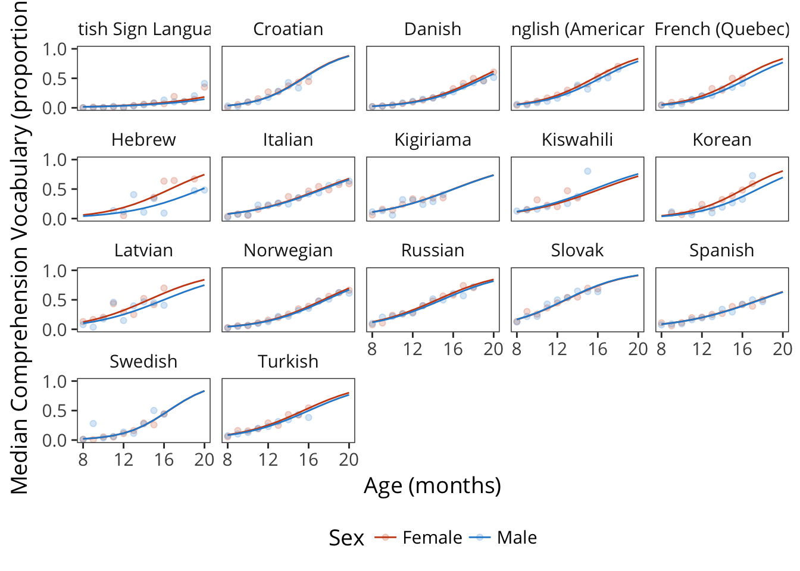
Our first plot shows comprehension on Words and Gestures. Visual inspection of the data suggest limited differences, but a female advantage in some languages (most pronounced in Korean, Latvian, and Hebrew). Note that many authors do not find gender differences in early comprehension (e.g., Eriksson et al. 2012). Feldman et al. (2000) also did not using a large, relatively representative American dataset, though they had data only from younger children (10-13 months).
We can examine the statistical models to get a clearer picture. For each language, we fit a robust generalized linear model predicting vocabulary size (number of words understood out of the total) predicted by age, and the interaction of age and gender. We specified this simple model so that the coefficient estimate on the age by gender interaction provides a convenient summary of the difference in vocabulary growth across groups. Despite the small magnitudes of the coefficients, 0 of 21 languages had a female advantage. In contrast, 0 showed a male advantage and the remainder did not show a significant gender by age interaction.Moving away from the model-based method above, we can look for a measure of effect size (similar to that used in the previous chapter). Effect size quantifies the size of the difference between groups in terms of the variability, producing a scale-free measure of difference that is appropriate for comparison across languages. Normally we’d use a measure like Cohen’s \(d\) here, where
\[d = \frac{\mu_2 - \mu_1}{SD_{pooled}}\]
But as in the previous chapter, we have the problem of non-normal distributions. To circumvent this issue, we use a non-parametric measure derived from the same components: the difference between medians, divided by the MAD. (We call this the MMAD).
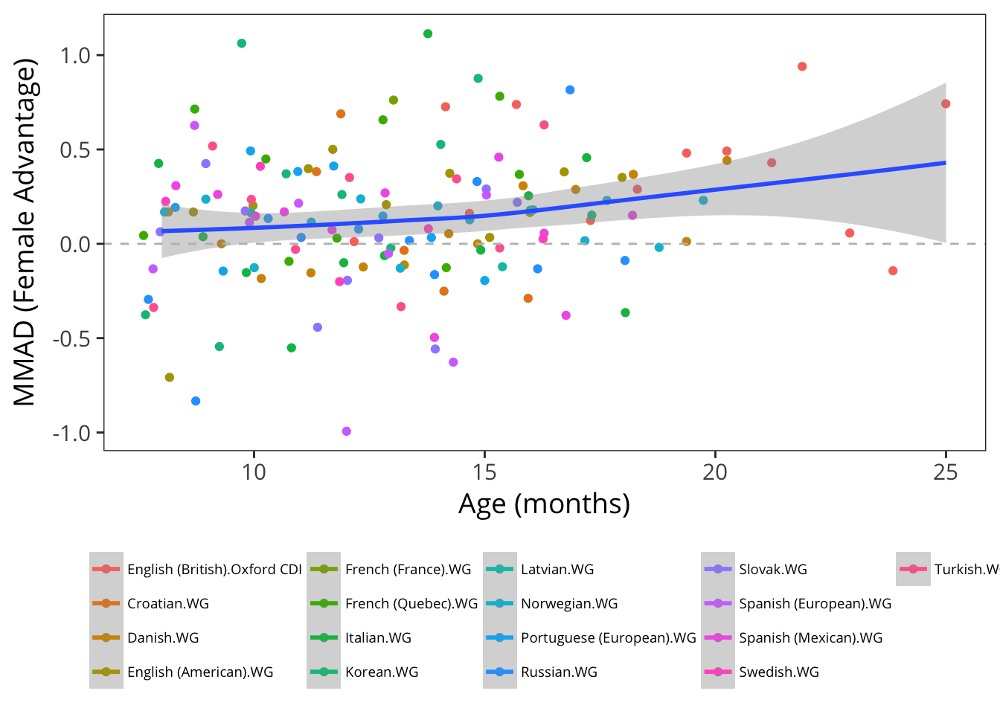
 Applying this measure to the data on comprehension, we see a quite small average female advantage that appears relatively constant across age. For those languages with dense enough data, we can take a weighted average of this pattern across ages, which reveals substantial variability. The overall median for these 15 languages is quite small as well, 0.1. In summary, there is some evidence for a modest female advantage in comprehension.
Applying this measure to the data on comprehension, we see a quite small average female advantage that appears relatively constant across age. For those languages with dense enough data, we can take a weighted average of this pattern across ages, which reveals substantial variability. The overall median for these 15 languages is quite small as well, 0.1. In summary, there is some evidence for a modest female advantage in comprehension.
5.1.2 Production (Words and Gestures)

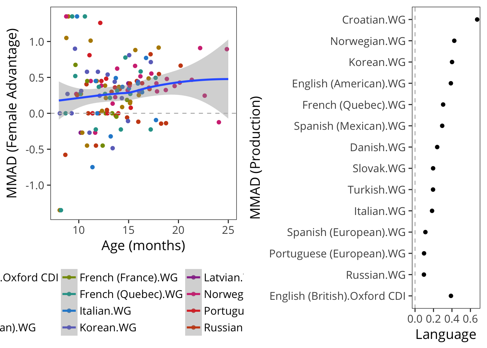
Examining the MMAD effect size measures, it is clear that there is limited signal in early production but the overall trend appears to be for a slight developmental increase from around 12 - 20 months. In addition, overall effect sizes are larger than in comprehension, with a median effect of 0.27, though in this analysis, averaging across age may be less warranted.
5.1.3 Production (Words and Sentences)
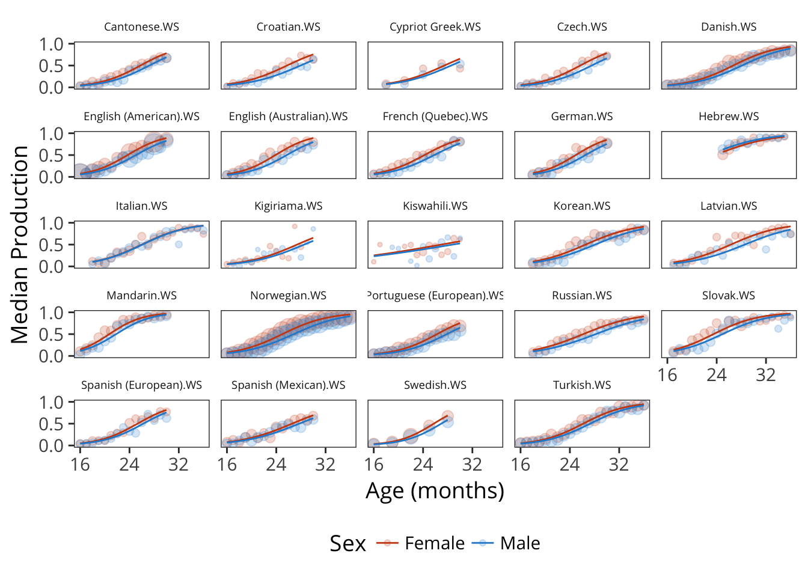
We next turn to production data on the Words and Sentences instrument, which we expect to be much more informative regarding production. Visual inspection confirms differences in almost every case, and an analysis of the fitted models shows that 0 of 24 languages show a statistically significant female advantage!
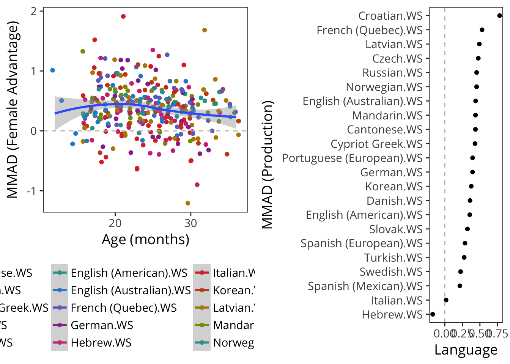
We next turn to the MMAD effect size measure. Here we see a relatively consistent difference across ages with perhaps a slight downward trend in effect size. This downward trend might be a function of ceiling effects on the form, however, as seen in the model-fit curves above for, e.g., Danish. When variability is limited by the form ceiling, effect size estimates will necessarily be depressed. The median female advantage is 0.4, substantially larger than that seen in early comprehension and somewhat larger than that seen in early production (perhaps due to floor effects early on).
5.1.4 Reporting Bias?
Do these differences reflect differences in measurement that are unique to the CDI? One way of addressing this question is to examine other studies of ex that have been found in other studies. Unfortunately, many of the studies reporting differences themselves rely on the CDI, likely for the reasons reviewed in Chapter 1, e.g. (Bauer, Goldfield, and Reznick 2002,L. Fenson et al. (1994),Feldman et al. (2000)). For exmaple, Feldman et al. (2000) collects CDIs with a large dataset of low-income American English speakers around 12 and 24 months. In those data, early comprehension showed no significant difference but production at 24 months showed a difference comparable to what we observed (\(N = 2156\), \(d = .35\), recomputed from provided summary statistics). These data, while providing replication in an independent dataset, do not speak to whether reporting biases contributed to or created the observed sex effects.
For external validation, we turn to two other studies that provide more objective (non parent-report) measurements of early language. First, a seminal study by Huttenlocher et al. (1991) measured gender effects in vocabulary size as estimated from a naturalistic sample of production and found substantial differences in vocabulary growth favoring girls. Although the measurements from this study are not comparable, the effects are quite large (and are relatively unaffected by controlling for maternal language exposure).
#> [1] 193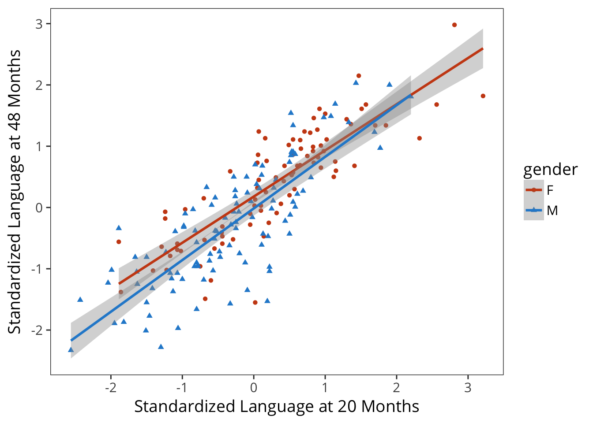
Second, Bornstein and Putnick (2012) use a particularly powerful study design to examine stability in early language estimates across different measures. They gathererd longitudinal data at 20 and 48 months using a wide range of standardized and parent-report measures, and then use structural equation modeling to model shared variance due to parent report as well as standardized latent language ability at each age. We digitized data from their Figure 2 to examine the size of the gender differences in the latent vocabulary construct that they recovered.13 As these scores are standardized, we can examine the difference in means and recover the standardized effect size for gender in the data, which is 0.62 standard deviations. Since this measurement is greater than that found in the CDI measurements for our study (the comparable American English measurement was 0.35), we doubt that our observed effect is due solely to reporting bias.
5.1.5 Discussion
In summary, we found a considerable and strikingly consistent cross-linguistic female advantage in early language production (replicating and extennding Eriksson et al. 2012). A much smaller but still relatively consistent female advantage was reported in comprehension. We suspect that neither of these effects are due to parental reporting bias. First, our review of the literature suggests that more objective measures yield similar effects to the extent that we were able to compare. Second, comprehension is very likely to be the measure more affected by reporting biases as it is likely to be more subjective (Feldman et al. 2000; L. Fenson et al. 2000). In contrast, we find a much smaller effect in comprehension. As noted above, we remain agnostic about the causes of these differences, but in Chapter ?? we discuss inferences from consistency across languages in much more detail.
5.2 Birth order
The Only 8 languages have birth order data. Only 7 languages have it for WS, and only 5 languages for WG.
5.2.1 Comprehension
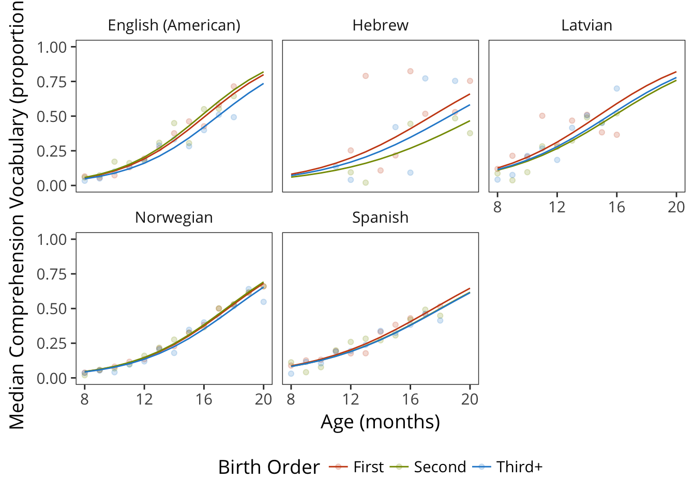
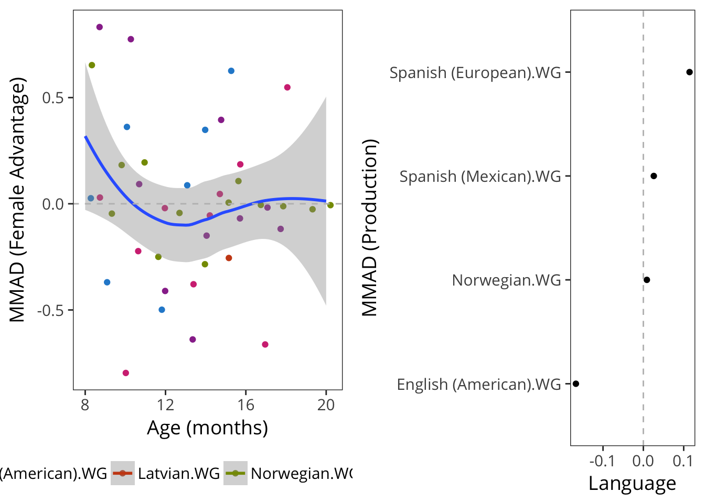5.2.2 Production (WG)
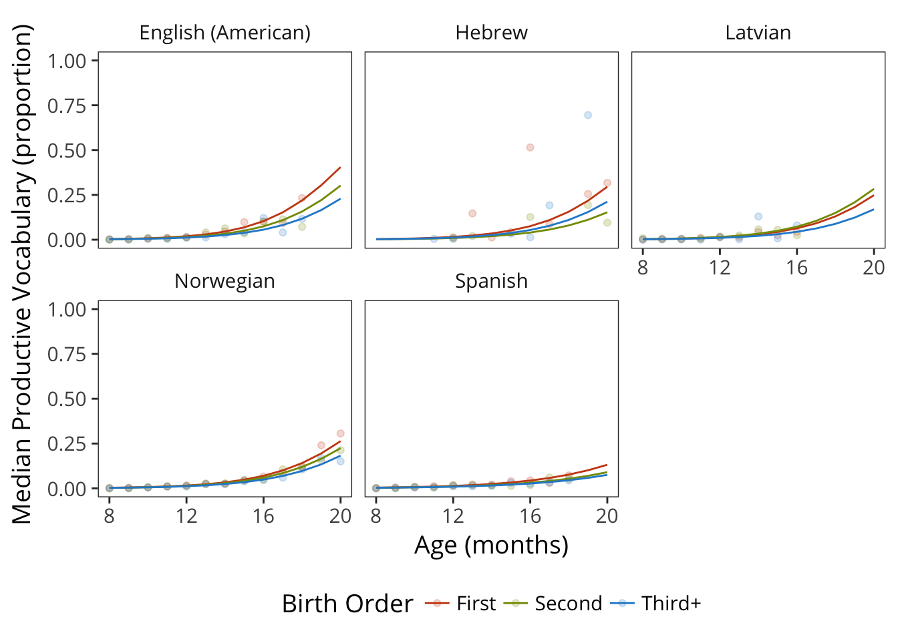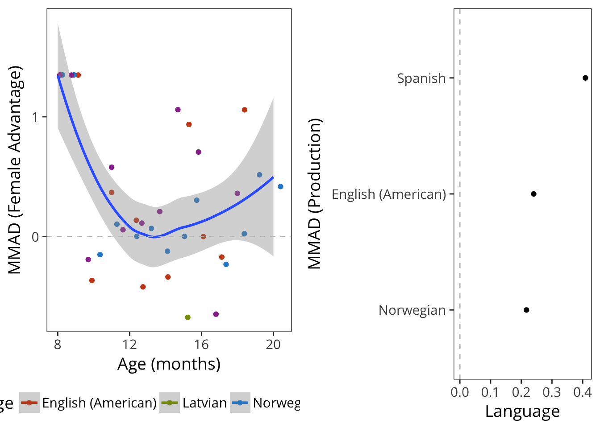5.2.3 Production (WS)
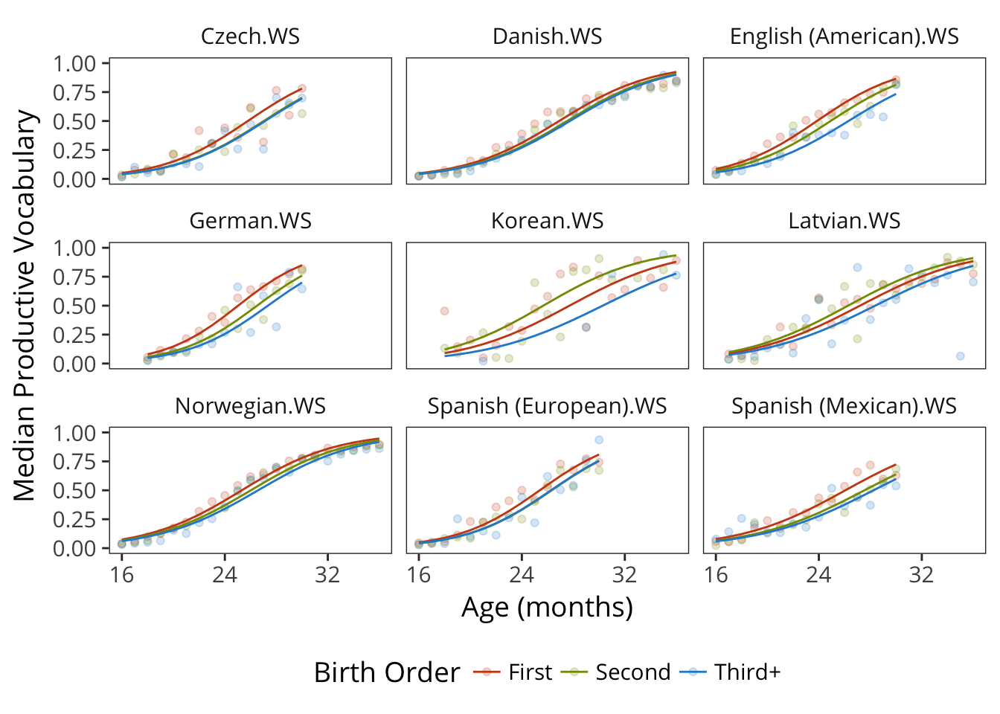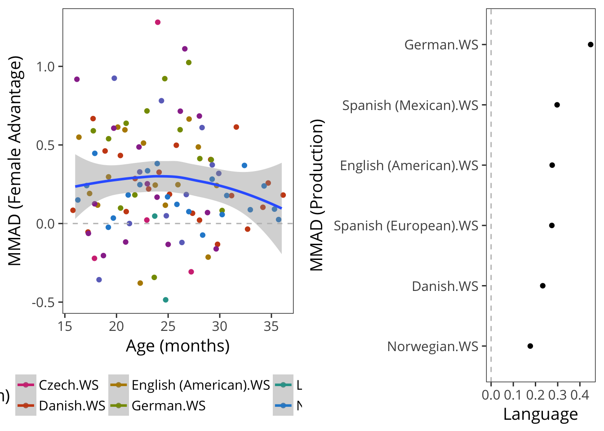5.3 Maternal education
From health to education, children from lower socioeconomic status (SES) backgrounds tend to be at higher risk for a variety of negative developmental outcomes, compared to their higher-SES peers (Bradley & Corwin, 2002). A large literature documents specific relations between SES and children’s early language abilities, especially oral vocabulary, which is in turn related to outcomes when children begin formal education (e.g., Durham et al., 2007; Hart & Risley, 2006; Hoff, 2002; Marchman & Fernald, 2008). Environmental explanations of these SES effects are often given in terms of indirect factors that affect life opportunities or experiences, such as nutrition and access to health care, as well as more direct factors that impact daily life, such as smoking during pregnancy, access to quality child care, or amount of time caregivers spend in interactions with their young children. Alternatively, even early language shows a significant genetic component, raising the possibility that SES-vocabulary links may instead be genetically mediated (Hayiou-Thomas et al., 2012).
Cross-national comparisons may shed light on the factors that lead to relations between SES and children’s vocabulary outcomes. On the one hand, relatively constant relations across language communities that vary widely in indirect and direct factors that shape learning would provide prima facie support for genetic explanations. In contrast, a greater degree of cross-national variability would point to the origins of SES effects in aspects of children’s early environments that vary with SES to differing degrees across countries (e.g., Siddiqi et al., 2007; L. C. H. Fernald et al., 2012). Our current study addresses this issue in very young children using data from the MacArthur-Bates Communicative Development Inventories (MB-CDI), a family of reliable and valid parent-report instruments for measuring early vocabulary development in children under 3 years (Fenson et al., 2007). We take advantage of Wordbank, a new database of more than 10,000 MB-CDI instruments from six countries (Frank et al., 2016). We use maternal education as a proxy for SES, following previous work suggesting that maternal education is strongly related to SES variation (Bornstein et al., 2003; Hoff, 2002).


5.3.1 Production (WG)
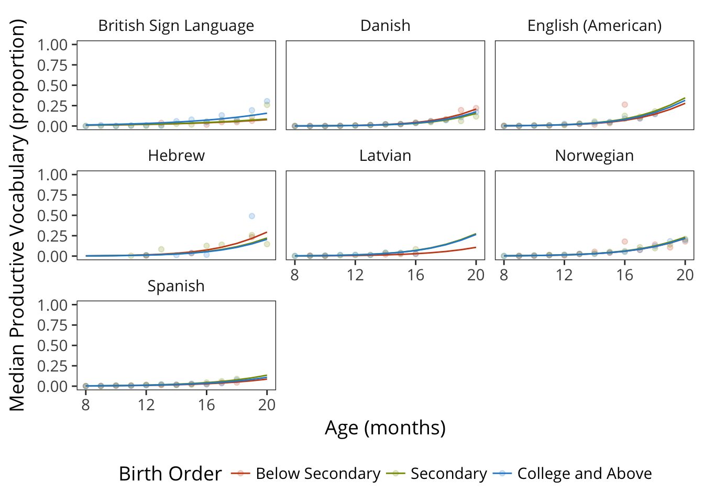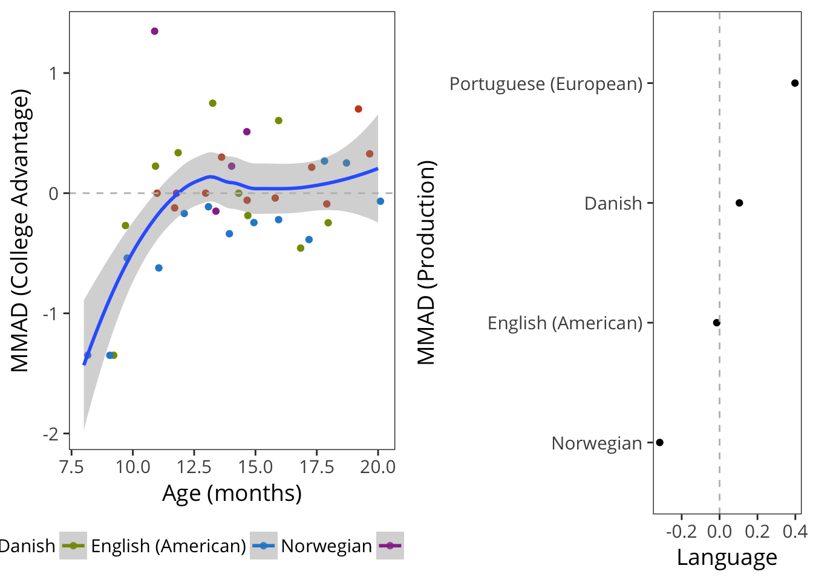5.3.2 Production (WS)
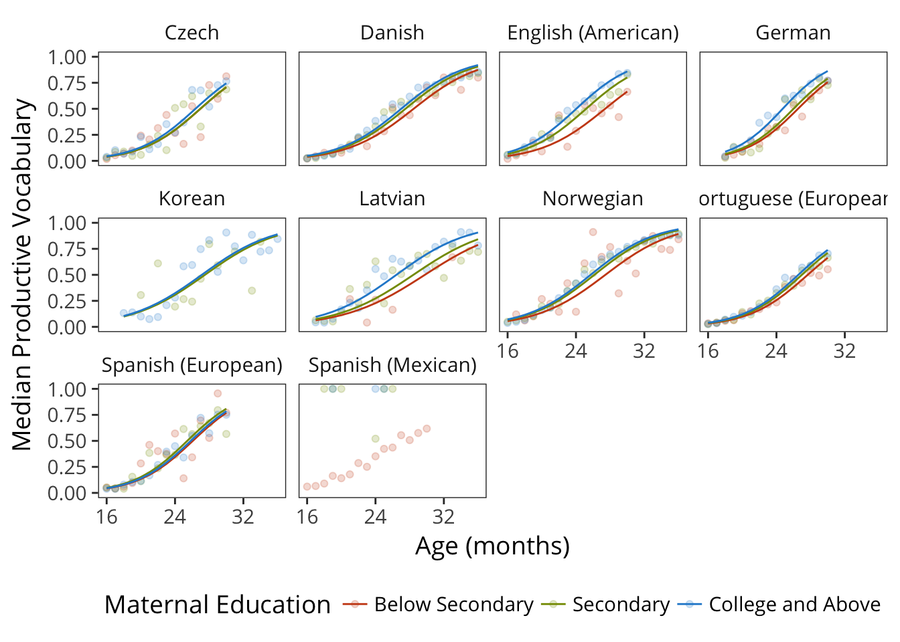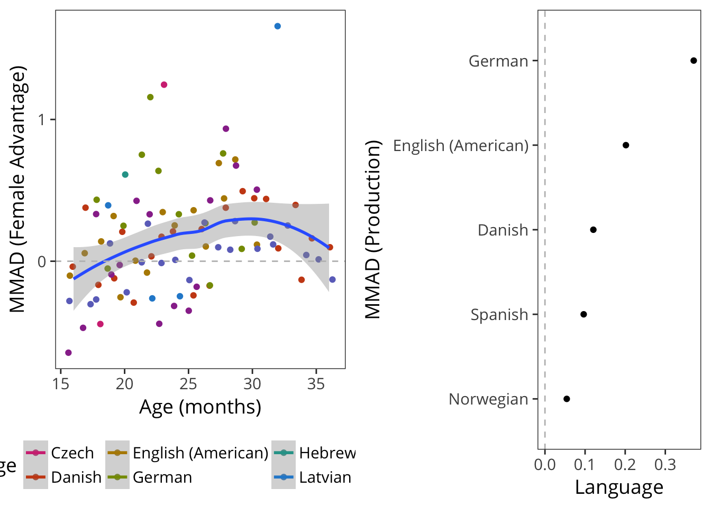5.3.3 Explanations
Our findings show that the relations between maternal education and children’s vocabulary outcomes is highly variable across countries. The observational nature of our data precludes strong inferences about the precise factors that lead to these differences, though speculation is certainly possible. The large magnitude of the differences across countries suggests a powerful role for environmental factors in shaping variation in child outcomes even before the age of 3 years. Findings from the present study support the proposal that inequalities in factors that are linked to child well being should be addressed early in life. Since features of the quantity and quality of caregiver linguistic input has been strongly implicated in early language development, future research should focus on policy interventions that facilitate children’s access to high quality talk by caregivers, including care availability and parental leave.
5.3.4 Reporting biases
The data suggest that different scales of the CDI may be susceptible to differential reporting biases in different subgroups of the population. On CDI sec- tions that require considerable subjective interpreta- tion of observations, parents with low educational and income levels, who were underrepresented in the CDI norming sample, seem to overestimate their child’s abilities in comparison with parents with more education and income. For example, the Phrase and Vocabulary Comprehension sections of the CDI-WG require parents to make potentially difficult judg- ments about their children’s levels of understanding. Negative correlations were found between scores on both of these sections and maternal education and health insurance status. Parents in general may have difficulty in distinguishing between comprehension that is based solely on verbal input and comprehen- sion that is based on a variety of nonlinguistic cues and contextual supports to meaning (Chapman, 1978). Some parents may recall times when the words were used in the child’s presence and may confuse ex- posure with understanding. Some may credit the child with comprehension if the child seems to under- stand the word in a highly constrained situation. These difficulties may explain why parental reports of verbal comprehension in this age range are higher than results of direct testing (Tomasello & Mervis 1994). They also may explain why correlations be- tween parental reports and comprehension scores from other methods are extremely low (Reznick, 1990).
One discussion in Feldman et al. (2000) and (???) is that there may be reporting biases, particularly in comprehension, for children in the youngest age groups.
(???) also found a negative correlation between SES and vocabulary in a subgroup analysis.
We examine reported comprehension vocabulary
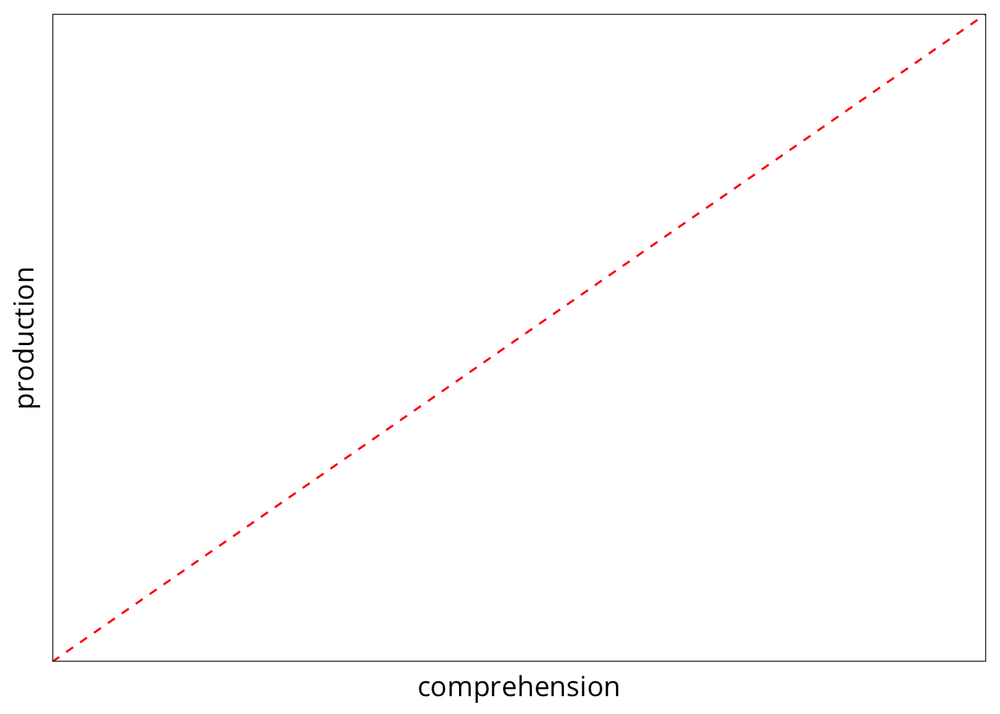
Throughout, we will assume that parents report on children’s biological sex, rather than their gender identity.↩
As an illustrative example, some literature has implicated fetal testosterone, though by a Lutchmaya, Baron-Cohen, and Raggatt (2001) used CDI meausures and recovered an effect somewhat similar to ours with a small sample (\(d = .64\) at 18 months with \(N=87\)), and \(d = .60\) at 24 months for a subsample). They found some relationship with fetal testosterone across sexes, but it did not hold up within sex (perhaps due to small samples). The mechanism by which testosterone translates into vocabulary growth is unclear however.↩
An earlier version of this analysis was reported in M. C. Frank et al. (2016).↩
These data are not perfect, I have double-digitized one point.↩